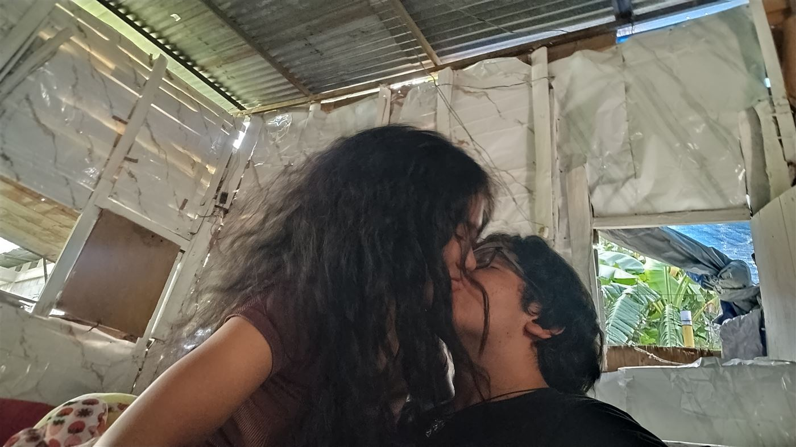

Mari, han pasado muchas cosas estas semanas, he tenido problemas míos y contigo, uno tras otro, tú también has tenido los tuyos, pero me ha hecho pensar demasiado en nuestra relación.
No quiero perder el romanticismo que caracterizó el inicio de esta bonita historia de amor, nos hemos enfocado un poco de más en otro tema y no quiero que pienses que he dejado de amar a María De Jesús Ramírez Bencomo.
Con los problemas que he tenido se me ha ido el tiempo para darte detalles o regalos, por eso es este proyecto Top Secret que hice, para recordarte lo mucho que te amo, mi piojito; no lo olvides, este detalle podrás verlo en cualquier momento desde tu teléfono celular.
Amo tu sonrisa, amo tu compañía, amo tus chistes, amo conversar contigo, amo escucharte hablar de FNAF, de El Conjuro, de Insidious, de Stranger Things, de la cultura pop y de todos los temas que te encantan; amo tus caras cuando algo te desagrada, amo tus expresiones cuando te digo que eres mi princesa, amo tu expresión concentrada cuando pruebas una nueva comida, amo la ternura que te caracteriza.
Mi amor, por si no te has dado cuenta, te amo: te amo románticamente como no he amado a nadie. Por ti me esfuerzo, por ti sigo adelante en el trabajo y busco nuevas maneras de hacer dinero, porque si me pidieras el peroné de Simón Bolívar me volvería profanador de tumbas.
— Te amo,
Yadir
